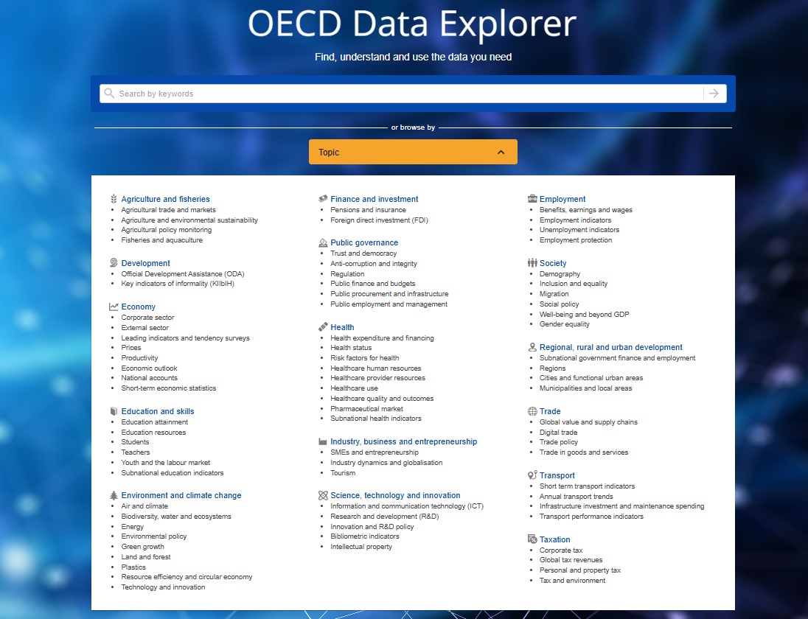
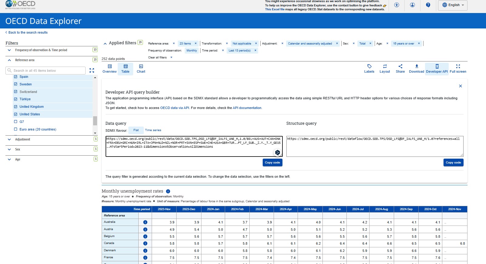
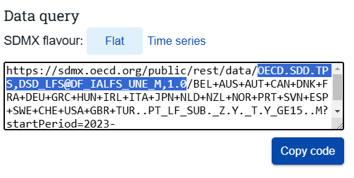
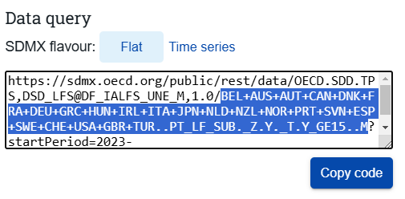

# Install devtools if not already installed
install.packages("devtools")
# Install the updated oecd package from GitHub
devtools::install_github("expersso/OECD")Introduction
The OECD (Organisation for Economic Co-operation and Development) provides extensive databases for economic, social, and environmental indicators. Accessing these programmatically through R is efficient and reproducible. In this article, we explore two popular R packages for accessing OECD data—oecd and rsdmx—and discuss critical updates to the OECD Developer API that have impacted package functionality.
We also provide practical examples, emphasize the importance of applying filters during data retrieval, and guide users on how to work with the latest tools to ensure seamless data access.
Why Programmatic Access Matters
Accessing data programmatically offers several benefits:
Customization: Tailor requests to retrieve only the data you need (e.g., specific countries, indicators, and years).
Efficiency: Save time and bandwidth by filtering data before download.
Reproducibility: Ensure that analyses can be easily updated or shared.
Automation: Streamline workflows by automating data extraction.
OECD Data Explorer: Exploring and Accessing Data
The OECD provides programmatic access to OECD data for OECD countries and selected non-member economies through a RESTful application programming interface (API) based on the SDMX standard. The APIs allow developers to easily query the OECD data in several ways to create innovative software applications which use dynamically updated OECD data.
The OECD Data Explorer is an interactive web-based platform that allows users to explore, visualize, and download data from the OECD databases. It is particularly useful for users who want to manually browse through datasets before deciding on specific data points for analysis. Here, we provide an overview of the OECD Data Explorer, including how to navigate the platform, customize filters, and access API links for programmatic use.
The OECD Data Explorer is available at: https://data-explorer.oecd.org/

When you visit the site, you are greeted with a clean interface for navigating through datasets. The platform organizes data into themes such as;
Economy
Education
Environment
Health
Innovation and Technology
Employment
Each theme contains various datasets that can be explored interactively.
Using the OECD Data Explorer
1. Search for a Dataset
The search bar allows you to quickly locate datasets. For example, if you are interested in unemployment data, simply type “unemployment” in the search bar.
2. Customize Filters
Once you’ve selected a dataset (e.g., Labour Market Statistics), you can apply various filters to narrow down the data you need. Some of them are given below:
Geographical Region: Choose specific countries or regions (e.g., USA, France, OECD Total).
Time Period: Select years of interest (e.g., 2015–2023).
Indicator: Specify what you are analyzing (e.g., Unemployment Rate, Employment-to-Population Ratio).
Measurement Units: Choose relevant units (e.g., percentages, index values).
3. Explore Data Visualizations
The platform provides instant visualizations, such as tables, line charts, and bar charts, based on your selected filters. These visualizations make it easy to understand trends and patterns in the data.
4. Exporting Data
Once you’ve customized the dataset, you can download in available formats, such as Excel or CSV by manually. the other choice is accessing the API Link. For programmatic access, the OECD Data Explorer provides API links that can be used in R or other programming languages. After selecting your filters, click on the Developer API and copy the generated link.
For example, let’s want to pull data about the unemployment rates of some countries. After applying the filters I want, such a link will be created.
https://sdmx.oecd.org/public/rest/data/OECD.SDD.TPS,DSD_LFS@DF_IALFS_UNE_M,1.0/BEL+AUS+AUT+CAN+DNK+FRA+DEU+GRC+HUN+IRL+ITA+JPN+NLD+NZL+NOR+PRT+SVN+ESP+SWE+CHE+USA+GBR+TUR..PT_LF_SUB._Z.Y._T.Y_GE15..M?startPeriod=2023-11&dimensionAtObservation=AllDimensions
This link can be directly used with R packages like rsdmx to fetch data programmatically.

Also you can get detailed information from https://www.oecd.org/en/data/insights/data-explainers/2024/09/api.html. This page provides detailed information on how to programmatically retrieve data from the OECD Data Explorer via the API.
The OECD Package: Accessing OECD Data in R
The oecd package is an R package designed to provide a convenient interface for accessing data from the OECD Developer API. It allows users to:
Explore available datasets in the OECD databases.
Retrieve filtered data programmatically for specific countries, indicators, and time periods.
Work with data in a reproducible way directly within R.
However, the version of the OECD package available on CRAN is currently outdated due to recent changes in the OECD API (2024). These changes have impacted the functionality of some key features in the CRAN release. You can find more information about changes in the OECD API from https://www.oecd.org/en/data/insights/data-explainers/2024/09/OECD-DE-FAQ.html.
To overcome these limitations, it is recommended to use the updated version of the OECDpackage available on GitHub, which is fully compatible with the latest OECD API.
For installation and usage details, refer to the updated package repository:
https://github.com/expersso/OECD
Installing the Updated oecd Package:
The updated version of the OECDpackage simplifies interaction with the OECD API, focusing on just two core functions: get_data_structure() and get_dataset(). Here’s a brief overview of their functionality and arguments:
1. get_data_structure()
This function retrieves metadata about a specific dataset from the OECD API. It provides information about variables, classifications, adjustments, unit measures etc. For example, we can access this information about the unemployment rates of some countries by taking the code of the relevant data set from the link given above. Then we can extract dataset information from the link we received from the developer API section, starting with slash (/) after the data expression and up to the next slash (Shown in blue in screenshot).

library(OECD)
dataset_unemprate <- "OECD.SDD.TPS,DSD_LFS@DF_IALFS_UNE_M,1.0"
data_str <- get_data_structure(dataset_unemprate)
str(data_str, max.level = 1)List of 15
$ VAR_DESC :'data.frame': 17 obs. of 2 variables:
$ CL_ACTIVITY_ISIC4 :'data.frame': 958 obs. of 2 variables:
$ CL_ADJUSTMENT :'data.frame': 17 obs. of 2 variables:
$ CL_AGE :'data.frame': 308 obs. of 2 variables:
$ CL_AREA :'data.frame': 469 obs. of 2 variables:
$ CL_SECTOR :'data.frame': 216 obs. of 2 variables:
$ CL_SEX :'data.frame': 7 obs. of 2 variables:
$ CL_TRANSFORMATION :'data.frame': 59 obs. of 2 variables:
$ CL_UNIT_MEASURE :'data.frame': 670 obs. of 2 variables:
$ CL_WORKER_STATUS_ICSE93:'data.frame': 13 obs. of 2 variables:
$ CL_MEASURE_LFS_TPS :'data.frame': 30 obs. of 2 variables:
$ CL_DECIMALS :'data.frame': 16 obs. of 2 variables:
$ CL_FREQ :'data.frame': 34 obs. of 2 variables:
$ CL_OBS_STATUS :'data.frame': 20 obs. of 4 variables:
$ CL_UNIT_MULT :'data.frame': 31 obs. of 4 variables:2. get_dataset()
This function retrieves the actual data from a specified dataset, with optional filters for dimensions like country, time, and indicators.
get_dataset(
dataset,
filter = NULL,
start_time = NULL,
end_time = NULL,
last_n_observations = NULL,
...
)For filters, you need to start with “/” after the part for dataset and take it until question mark “?”. But be careful, don’t include question mark. For the time filtering, start_time or end_time arguments can be used.

data_filters_unemprate <- "BEL+AUS+AUT+CAN+DNK+FRA+DEU+GRC+HUN+IRL+ITA+JPN+NLD+NZL+NOR+PRT+SVN+ESP+SWE+CHE+USA+GBR+TUR..PT_LF_SUB._Z.Y._T.Y_GE15..M"
df <- get_dataset(dataset = dataset_unemprate,
filter = data_filters_unemprate,
start_time = 2014)
head(df) ACTIVITY ADJUSTMENT AGE DECIMALS FREQ MEASURE OBS_STATUS ObsValue
1 _Z Y Y_GE15 1 M UNE_LF_M A 3.6
2 _Z Y Y_GE15 1 M UNE_LF_M A 3.7
3 _Z Y Y_GE15 1 M UNE_LF_M A 5.5
4 _Z Y Y_GE15 1 M UNE_LF_M A 5.6
5 _Z Y Y_GE15 1 M UNE_LF_M A 5.7
6 _Z Y Y_GE15 1 M UNE_LF_M A 4.3
REF_AREA SEX TIME_PERIOD TRANSFORMATION UNIT_MEASURE UNIT_MULT
1 USA _T 2019-06 _Z PT_LF_SUB 0
2 USA _T 2019-07 _Z PT_LF_SUB 0
3 BEL _T 2024-06 _Z PT_LF_SUB 0
4 BEL _T 2024-07 _Z PT_LF_SUB 0
5 BEL _T 2024-08 _Z PT_LF_SUB 0
6 DEU _T 2015-08 _Z PT_LF_SUB 0Using the rsdmx Package
The rsdmx package allows interaction with the OECD Developer API through SDMX format. It is particularly useful if you prefer working directly with API URLs.
Installing the rsdmx Package
install.packages("rsdmx")Key Functions in rsdmx
readSDMX(): Fetches data from an SDMX-compatible API endpoint.as.data.frame(): Converts the retrieved SDMX object into a data frame.
Example Workflow with rsdmx
Here’s how you can retrieve unemployment data:
# Load the rsdmx package
library(rsdmx)Warning: package 'rsdmx' was built under R version 4.3.3# Define the API URL for unemployment rates
oecd_url <- "https://sdmx.oecd.org/public/rest/data/OECD.SDD.TPS,DSD_LFS@DF_IALFS_UNE_M,1.0/BEL+AUS+AUT+CAN+DNK+FRA+DEU+GRC+HUN+IRL+ITA+JPN+NLD+NZL+NOR+PRT+SVN+ESP+SWE+CHE+USA+GBR+TUR..PT_LF_SUB._Z.Y._T.Y_GE15..M?startPeriod=2023-11&dimensionAtObservation=AllDimensions"
# Step 1: Fetch the data
unemployment_data <- readSDMX(oecd_url)
# Step 2: Convert to a data frame
unemployment_df <- as.data.frame(unemployment_data)
# View the data
head(unemployment_df) TIME_PERIOD REF_AREA MEASURE UNIT_MEASURE TRANSFORMATION ADJUSTMENT SEX
1 2024-03 ITA UNE_LF_M PT_LF_SUB _Z Y _T
2 2024-04 ITA UNE_LF_M PT_LF_SUB _Z Y _T
3 2024-08 BEL UNE_LF_M PT_LF_SUB _Z Y _T
4 2024-09 BEL UNE_LF_M PT_LF_SUB _Z Y _T
5 2024-10 BEL UNE_LF_M PT_LF_SUB _Z Y _T
6 2023-12 SVN UNE_LF_M PT_LF_SUB _Z Y _T
AGE ACTIVITY FREQ obsValue UNIT_MULT DECIMALS OBS_STATUS
1 Y_GE15 _Z M 6.9 0 1 A
2 Y_GE15 _Z M 6.7 0 1 A
3 Y_GE15 _Z M 5.7 0 1 A
4 Y_GE15 _Z M 5.8 0 1 A
5 Y_GE15 _Z M 5.8 0 1 A
6 Y_GE15 _Z M 3.4 0 1 AConclusion
Both oecd and rsdmx allow you to specify filters directly in your API request, which is critical for:
Time Efficiency: Smaller, focused datasets download faster.
Storage Optimization: Filtering minimizes the size of the retrieved dataset.
Simpler Analysis: Pre-filtered data reduces the need for extensive preprocessing.
When working with OECD databases in R, the updated version of the oecd package (available on GitHub) is a reliable choice, provided you install it from its GitHub repository. If you prefer working directly with API URLs, the rsdmx package is another strong option.
Regardless of the package, applying filters in your data requests is essential to ensure efficiency and reproducibility. By integrating these tools into your workflow, you can access OECD data programmatically and focus on the analysis itself.